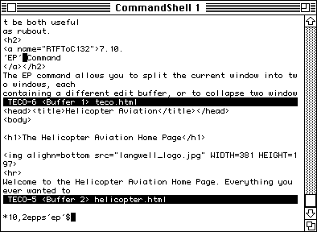

Emacs: The Editor For The Next 40 Years
By Jeetaditya Chatterjee
I have the software tastes of a 60 year old man
Press s for speaker notes
What is emacs
The Humble beginnings

How has emacs has survived this long?
Cults help
emacs terminals
emacs shells (as in a shell implemented in emacs lisp)
emacs window managers
emacs web browsers (as in they embed a full web browser)
emacs init systems…
also in some places its still more advanced than most editors
Hackability
It has a low barrier to extension
Most if not all things can be extended / modified as most things are implemented in emacs lisp
you can advise functions to do exactly what you want
and so much more…
Its extremely introspect able
in line re evaluation.
the ecosystem
org mode
the git interface
so
many
more
Why it will outlast current editors
Its pragmatic but not stagnant
Its very backwards compatible!
Its got a community with no where else to go…
Conclusion
Thanks